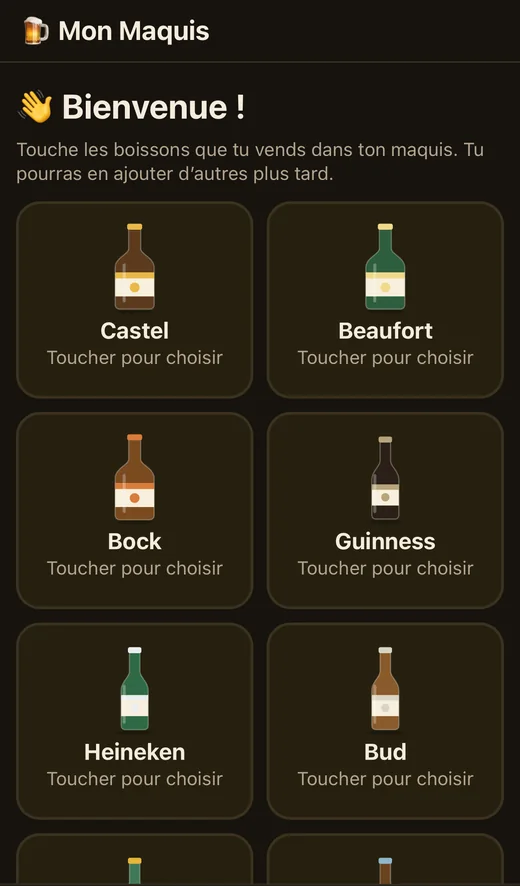
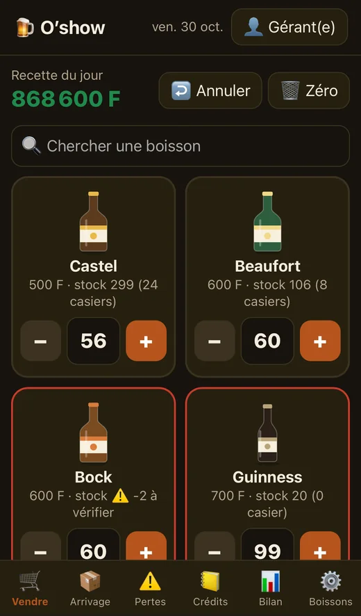
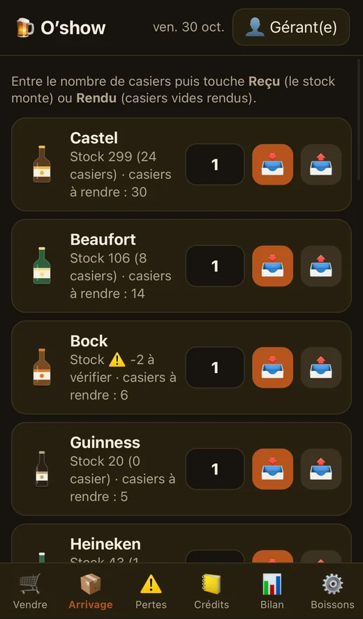
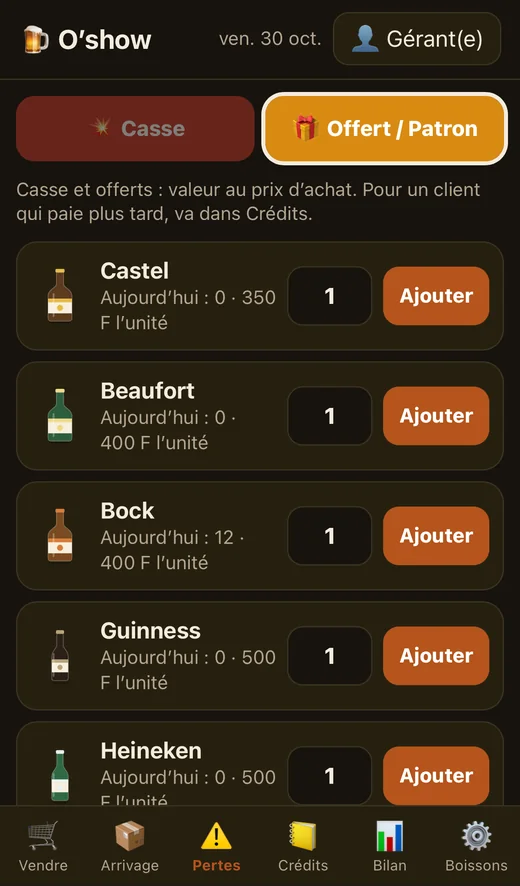
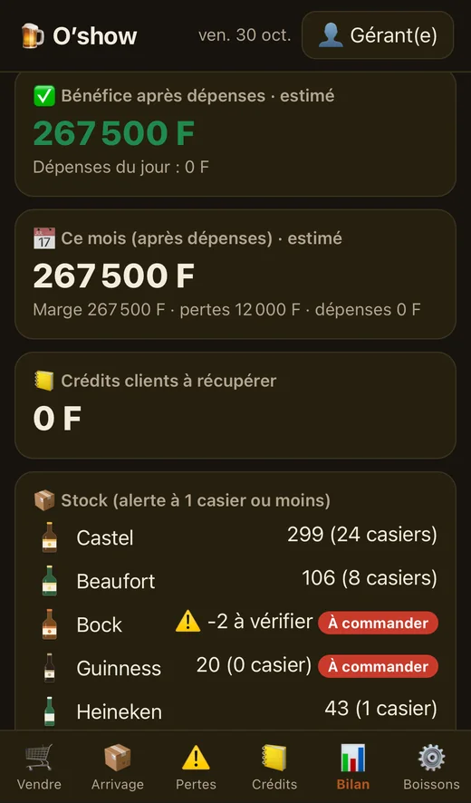
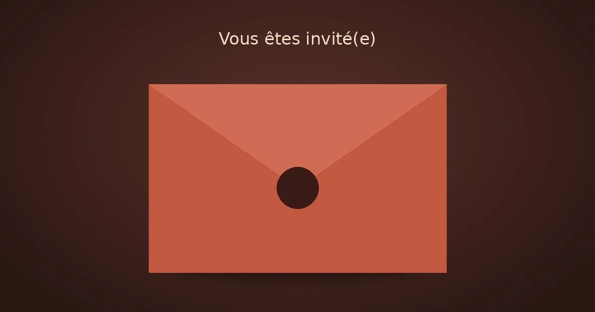

Web · Abidjan
Des applications simples, faites pour le terrain.
Web designer à Abidjan. Je conçois des sites et des applications faciles à utiliser, rapides, pensés d'abord pour le téléphone.
Services
Ce que je crée
Page vitrine
Une page claire pour présenter votre activité, avec un bouton WhatsApp. Rapide sur téléphone.
À partir de 70 000 FCFASite vitrine
Plusieurs pages (activités, réalisations, contact), claires et rapides sur téléphone.
À partir de 150 000 FCFAApplication sur mesure
Un outil simple pour gérer votre activité, comme Mon Maquis pour les maquis.
Sur devis
Prix de départ en FCFA, selon le besoin. Pour un devis précis, écrivez-moi sur WhatsApp.
Étude de cas
Mon Maquis
- Le problème
Pour beaucoup de gérants de maquis et de bars, un fichier Excel est trop compliqué. Le stock, la caisse et les pertes se suivent mal, et le bénéfice reste flou.
- Ma solution
Une application très simple, pensée pour des utilisateurs peu à l'aise avec l'écrit. Tout tient en quelques écrans : vendre, les arrivages de casiers, les pertes, les crédits des clients et le bilan du jour.

Premier lancementLe gérant donne le nom de son maquis et choisit ses boissons. 
VendreUn appui = une vente. Chaque boisson est reconnue par son sticker, sans lire. 
ArrivageLes arrivages de casiers : on entre le nombre, le stock monte. 
PertesLes pertes : la casse et les offerts, comptés au prix d'achat. 
BilanLe bilan du jour : bénéfice estimé, crédits à récupérer, stock à commander.
Captures de l'application avec des données de démonstration.
- Le design
Des stickers de boissons dessinés par moi servent d'icônes : on reconnaît une boisson au premier coup d'œil, sans lire.
- Sous le capot
Un seul fichier HTML, installable sur l'écran d'accueil du téléphone, qui fonctionne sans connexion. Chaque achat est protégé par un code d'activation (2 téléphones par code), vérifié par un petit serveur de licences.
HTML · CSS · JSPWAHors connexionCloudflare- Où j'en suis
L'application est en ligne et le produit est créé sur Chariow. Les tests auprès de vrais gérants sont la prochaine étape.
Voir Mon MaquisUne idée d'application ?
Les visuels de lancement sont présentés côté Graphisme.
Étude de cas
Invitation de mariage

- Le besoin
Les faire-part papier coûtent cher et se perdent, et les cartes envoyées en photo sur WhatsApp ne donnent aucune information pratique. Les mariés veulent une invitation qui se partage d'un clic.
- Ma solution
Une invitation animée : l'invité ouvre l'enveloppe et découvre l'histoire du couple, le programme, le lieu sur la carte, la tenue conseillée et un bouton « Je serai là » qui ouvre WhatsApp avec un message prêt à envoyer.
Enveloppe animéeProgrammeRSVP WhatsAppMusique- Un lien par invité
En ajoutant le nom de l'invité à la fin du lien, son nom s'affiche au-dessus de l'enveloppe. Sur un vieux téléphone, le site passe tout seul en mode léger, sans animation.
- Sous le capot
Du HTML, du CSS et du JavaScript simples, sans framework. Tout se personnalise dans un seul fichier : prénoms, date, lieu, couleurs et numéro WhatsApp.
HTML · CSS · JSVercelUn seul fichier de réglages- Le formulaire client
Pour une invitation sur mesure, le client remplit un formulaire de 10 questions. Ses réponses m'arrivent directement sur WhatsApp, prêtes à servir pour créer son invitation.
- Où j'en suis
Le modèle est terminé et la démo est en ligne. Son bouton « Je serai là » m'envoie un message : les prochains tests seront de vrais futurs mariés.
À propos
Derrière DELYART, Jardel.
Je suis graphiste et web designer indépendant à Abidjan. Je dessine des logos, des identités visuelles et des flyers, et je crée des applications simples, pensées d'abord pour le téléphone.
Mon fil rouge : un travail propre, lisible, fait pour l'usage réel, celui d'un commerçant, d'un maquis ou d'un mariage.
Contact
Une application ou un site à créer ?
Écrivez-moi, je réponds vite.